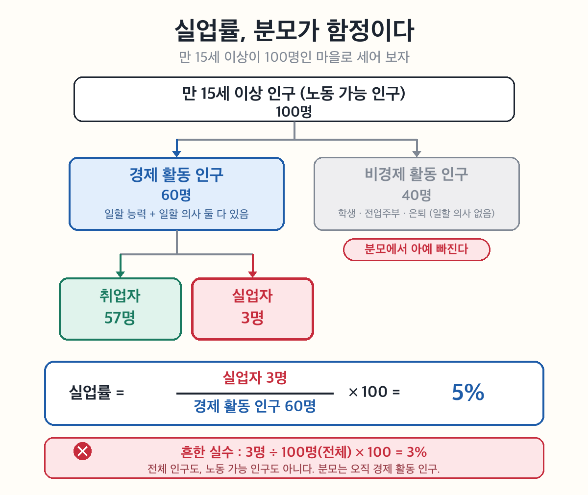
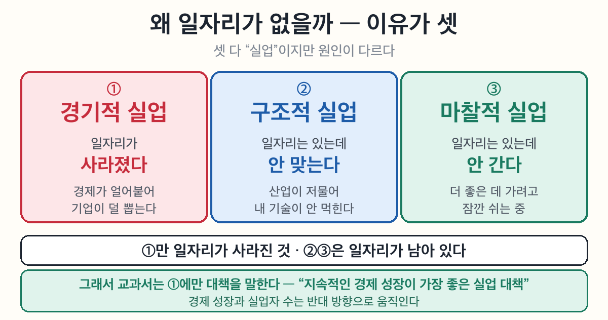
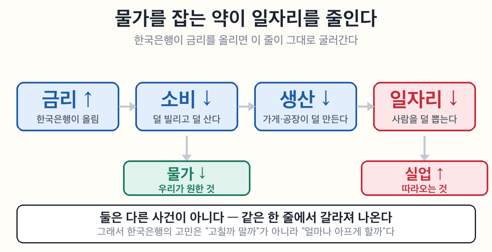

사회② 국민경제와 국제거래 5-2~5-3차시 — 물가와 실업 (정답·모범답안)
물가를 잡으면 일자리가 줄어든다고?
물가 지수 = 기준이 되는 해를 100으로 놓고, 지금이 얼마인지 견준 수.
| 지수 | 뜻 |
|---|---|
| 100 | 기준 시점과 같다 |
| 105 | 기준보다 5% 올랐다 |
| 98 | 기준보다 2% 내렸다 |
🔴 CPI는 '평균'이다. 소비자 물가 지수는 도시 가구의 평균 소비 패턴으로 만든다. 그래서 "물가가 안정됐다" 는 뉴스와 내 체감이 다를 수 있다 — 내가 자주 사는 물건이 평균과 다르면 그렇다.
물가가 오르는 길은 세 갈래다. 셋 다 결국 "돈은 많은데 물건은 그대로" 로 모인다.
| 원인 | 무슨 일이 | 쉽게 말하면 |
|---|---|---|
| 수요 증가 | 사려는 사람이 늘어남 | 물건은 그대로인데 사겠다는 손이 늘었다 |
| 통화량 증가 | 시중에 돈이 많이 풀림 | 돈이 흔해지면 돈의 값이 떨어진다 |
| 생산비 상승 | 임금·원자재값이 오름 | 만드는 값이 오르니 파는 값도 오른다 |
9단계와 이어진다 — 금리를 올리면 ①수요와 ②통화량을 거꾸로 돌리게 된다.

실업 3유형 — 경기적(경기가 나빠서) · 구조적(기술·산업이 바뀌어서) · 마찰적(더 나은 곳으로 옮기는 중).
🔴 분모는 '경제 활동 인구'다. 전체 인구도, 노동 가능 인구도 아니다. 학생·전업주부는 일할 의사가 없어 분모에서 아예 빠진다.

둘 다 좋은 목표인데 동시에 잡기 어렵다.
| 금리를 | 물가는 | 일자리는 |
|---|---|---|
| 올리면 | 진정된다 ✅ | 줄어든다 ❌ |
| 내리면 | 오른다 ❌ | 늘어난다 ✅ |
핵심 — 이건 정책이 서툴러서가 아니다. 아픔이 부작용이 아니라, 그게 약이 듣는 방식이다. 그래서 한국은행의 고민은 "할까 말까" 가 아니라 "얼마나" 다.

사회② 국민경제와 국제거래 5-2~5-3차시 — 물가와 실업 (정답·모범답안)
🎙️ 이 차시의 축: "물가 안정과 고용 안정, 둘 다 좋은데 왜 동시에 못 잡나." 1부(물가)·2부(실업)는 재료이고, 9단계가 목적지다. 앞 8단계는 9단계를 위한 준비라고 보면 배치가 이해된다.
🔀 왜 통합했나 (2026-08-19 · 기존 5-2 물가 / 5-3 실업을 하나로)
성취기준 [9사(일사)10-02] 가 애초에 둘을 묶고 있다 — "물가 상승과 실업 문제가 경제에 미치는 영향을 파악하고, 이를 해결하기 위한 방안을 탐구한다." 평가기준 '상'은 한 걸음 더 나가 "물가 안정과 완전고용을 위한 정부의 정책을 비교·평가할 수 있다" 인데, 비교·평가는 둘을 같이 놓아야만 가능하다. 교과서도 96~99쪽 한 중단원이고 진도 계획도 「2. 물가와 실업」 한 항목(2시간)이다. 쪼갠 쪽이 예외였다.
통합으로 회수되는 것 셋:
1. Ⅴ단원 관통 질문 Q3 — "둘 다 좋은데 왜 동시에 못 하지?" → 이전엔 던져만 놓고 답할 자리가 없었다.
2. 금리 — 이전 5-2에서 금리↑ → 물가↓ 까지만 가고 "그럼 일자리는?" 이 끊겼다. 이제 9단계에서 이어진다.
3. 성취기준의 "해결 방안 탐구" — 어느 쪽 차시에도 온전히 없었다.
⚠️ 분량 관리: 단순 합치기가 아니다. 빈칸 26 → 20, OX 11 → 8, 어휘표 2개 → 1개로 압축하고 그 자리에 9단계를 넣었다. 총량을 늘리지 않았다. (근거 = 8/18 실측 85명: 뒤로 갈수록 회수율 하락)
🗂 기존 5-2·5-3은 archived. 5-3 차시 번호는 결번이며 5-4(국제거래)·5-5(환율)는 번호를 유지한다(허브 링크 보존).
⏱ 시간 예산 (2차시 · 90분)
| 차시 | 구간 | 분 |
| 1차시 | 도입(hook) | 5 |
| 1~4단계 물가 + 빈칸 ①~⑪ 병행 | 30 | |
| OX 1~4 | 5 | |
| 여유·질문 | 5 | |
| 2차시 | 지난 시간 되짚기 | 3 |
| 5~8단계 실업 + 빈칸 ⑫~⑲ | 22 | |
| 9단계 (이 차시의 목적지) | 8 | |
| OX 5~8 | 4 | |
| 🔒 💭 서술칸 | 5 | |
| 🔒 🧠 셀프 3줄 | 3 |
🔴 2차시 뒤 8분은 협상 대상이 아니다. 8/18 실측(85명): 근거칸 72% → 셀프3줄 44% → 서술 20%, 6반은 3줄 6%·서술 0%. 원인은 학생이 아니라 설계에서 뒤 시간을 미리 안 뗀 것이다. 앞이 늘어지면 뒤가 통째로 먹힌다.
💡 1차시가 밀리면 9단계를 자르지 말고 1~4단계 설명을 줄일 것. 9단계가 빠지면 이 차시는 그냥 옛날 두 차시로 되돌아간다.
🖼🎬 시각자료·영상 배치 (2026-08-20 신설)
| 위치 | 자료 | 출처·라이선스 | 왜 여기인가 |
| 표지 | 기울어진 양팔 저울(장바구니 ↔ 안전모) | Aurora 생성·무텍스트 | 차시 축을 한 장으로. 균형이 안 맞는 상태가 핵심 |
| 1부 머리 | 🎬 크랩 「내 과자 돌려줘요」 4:30 | 유튜브 | 물가를 지수가 아니라 과자 봉지로 먼저 만나게 |
| 3단계 | 🖼 1923 독일 지폐 벽지 | Bundesarchiv 102-00104 / Pahl, Georg / CC BY-SA 3.0 de | 화폐 가치 하락의 극단을 실사로. 생성 이미지로 대체 금지 |
| 3단계 | 🎬 3분경제 하이퍼인플레 3:28 | 유튜브 | 역사① 연계(중2 바이마르) |
| 8단계 | 🎬 MBC 「경제 성장하는데 취직은」 2026.08.13 | 유튜브 | 성장≠고용 — 5-1 GDP 한계 ③(총량은 분배를 못 봄) 회수 |
| 9단계 | 🖼 짧은 담요 | Aurora 생성(2026-08-14 제작·재사용) | trade-off를 한 장으로. 이불이 나빠서가 아니라 애초에 짧다 |
| 9단계 | 🎬 YTN 「물가 잡으려다 경제 잡는다」 1:42 | 유튜브 | 「더 생각해 보기」 직전 발화점 |
⏱ 영상 총 11분 내외(2차시 90분 중). 1차시에 크랩+3분경제(8분), 2차시에 MBC+YTN(3~4분). 9단계 YTN은 서술칸 직전에 틀 것 — 보고 나면 바로 쓸 수 있다.
⚠️ URL은 2026-08-14·08-20 oEmbed로 실존 확인함(제목·채널명 대조). 재검색하지 말고 그대로 쓸 것. 다만 수업 전날 한 번 재생 확인은 권장(채널 비공개 전환 대비).
⚠️ 실사 사진 교체 금지 — 1923 벽지 사진은 실재한 역사 장면이라 AI 생성 이미지로 바꾸면 안 된다(볼트 룰: 실재 장소·유물·사건은 실자료). 캡션의 CC BY-SA 3.0 de 저작자 표기를 지우지 말 것.
💡 MBC 실업 뉴스는 시의성 자료다. 학년이 바뀌면 최신 뉴스로 교체하되 "성장은 하는데 고용은" 이라는 각도는 유지할 것.
📌 학습 목표
- 물가와 물가 지수의 의미를 설명하고, 인플레이션이 경제생활에 미치는 영향을 말할 수 있다.
- 실업자의 의미와 실업률을 설명하고, 실업이 우리 생활에 미치는 영향을 말할 수 있다.
- 물가 안정과 고용 안정이 부딪히는 까닭을 설명할 수 있다.
1부. 물가 — 돈의 힘이 빠질 때
📖 1단계: 물가와 물가 지수
한 나라 안의 수많은 상품 가격은 모두 같은 방향·크기로 변하지 않는다. 그래서 전반적인 가격 변화를 알려면 여러 상품의 가격을 평균한 ①물가를 구한다. 물가가 얼마나 오르내렸는지 재기 위해, 기준 시점의 물가를 ②100으로 놓고 비교한 ③물가 지수를 작성한다. 그중 소비자의 생활에 필요한 대표 품목의 가격·요금을 종합한 것을 ④소비자 물가 지수라고 한다.
(교과서 원문: "물가 지수: 기준 시점에 상품을 사는 데 들어가는 비용을 100으로 놓고, 다른 시점에 같은 상품을 사는 데 들어가는 비용을 측정한 것이다. 만약 1년 후에 물가 지수가 103이라면 1년 동안 물가가 3% 오른 것이다." — 천재교육 사회②(구정화) 96쪽)
🎯 여기가 핵심! 물가 지수는 기준=100. 103이면 +3%, 98이면 −2%. ④는 소비자 물가 지수 — '생산자 물가 지수'와 헷갈리지 않게.
⭐ 교사 배경 — "소비자는 CPI를 안 보는데 왜 '소비자'인가?" (천대현 2026-08-19 질문 · 학생 토막으로 반영됨)
교과서 문장 "물가 변동이 소비자의 생활에 미치는 영향을 파악하기 위해서 작성한다" 에는 주어가 생략돼 있다. 파악하는 주체는 소비자가 아니라 국가·정책 담당자다. 즉 이름의 '소비자'는 사용자가 아니라 측정 대상이다 — 소비자가 보는 지수가 아니라 소비자가 사는 물건들의 지수.
1차 출처(통계청〈현 국가데이터처〉 「소비자물가지수란 무엇이며, 왜 작성하는가?」): 용도는 "경제동향분석이나 경제정책수립" 이며 특히 "근로자의 임금이나 국민연금수준 등을 결정하기 위한 지표" 라고 명시. 즉 소비자가 지수를 보러 가는 게 아니라, 지수가 연금·임금·금리로 바뀌어 소비자에게 온다. 학생 토막은 이 방향을 뒤집어 준 것.
⭐ 한 걸음 더 (묻는 학생에게만): 같은 문서에 CPI는 "도시가구의 평균적인 소비패턴을 반영"(458개 품목·2020년=100·기준연도 5년마다 개편)이라고 돼 있다. 그런데 나는 평균 가구가 아니다. 그래서 "물가 3% 올랐대" 와 "체감은 훨씬 비싼데?" 가 어긋난다.
🔗 5-1과 같은 구조다 — GDP는 총량이라 나눠진 모양(분배)을 못 보고, CPI는 평균이라 내 장바구니를 못 본다. 지표의 한계가 단원 안에서 두 번 반복되니 여기서 한 번 이어 주면 학생이 "지표란 원래 이런 것"을 잡는다.
📖 2단계: 물가는 왜 오를까? — 세 가지 원인
물가 상승에는 크게 세 원인이 있다. 첫째, 나라 경제 전체의 공급보다 ⑤수요가 많으면 물가가 오른다. 둘째, 시중에 도는 ⑥통화량이 많아져 소비·투자가 활발해지면 물가가 오른다. 셋째, 수입 원유나 원자재 가격이 올라 ⑦생산비가 늘어날 때도 물가가 오른다.
(교과서 원문: "국가 경제 전체의 공급보다 국가 경제 전체의 수요가 많으면 물가가 상승한다. 또한 시중에 유통되는 통화량이 많아지면 … 물가가 상승한다. 수입 원유나 원자재 가격이 상승하여 생산비가 증가하는 때도 물가가 상승한다." — 천재교육 사회②(구정화) 96쪽)
🎯 여기가 핵심! 세 원인을 구분시키는 게 출제 포인트 — ⑤ 총수요 견인 / ⑥ 통화량 / ⑦ 비용 인상. 사례를 주고 어느 원인인지 고르는 자료제시형이 잘 나온다.
⭐ 판서 요령: 이 표를 지우지 말고 칠판에 남겨 둘 것. 9단계에서 화살표만 반대로 그리면 금리 설명이 끝난다. 두 번 그리지 않는다.
🎬 2단계 영상 (2026-08-27 신설·실재 검증 완료) — [YOUFiX_wwZQ] 교양이를 부탁해 「에너지 가격 오르면 밥값 오른다」 2분 51초(2026-08-23 업로드). oEmbed 실조회 + 자막 실물 확인(제목만 보고 고르지 않음).
· 쓰는 자리 = 원인 ③생산비 상승. 셋 중 학생이 가장 안 와닿아 하는 항목인데, 영상이 에너지 → 비료 → 식량 → 생필품 → 인건비로 사슬을 끝까지 보여 준다.
· 회수 지점 = "전량 수입하는 나라" → 5-4 무역 의존도 86% · 5-5 환율↑ → 수입 원자재값↑ → 다시 이 ③번.
· ⚠️ 자동 자막 오탈자 있음(화석연료→"화성열인", 곡물→"공물", 아껴쓰라→"아게쓰라"). 인용은 영상 음성 기준으로 할 것.
· 🔎 9단계 영상은 바꾸지 않았다 — 같은 채널 「경기를 죽여야 물가가 잡힌다? 연준이 빠진 금리 딜레마」(2:11·2026-08-23·`DU1IbG-r64I`)가 9단계 주제와 정확히 겹치나, 이미 YTN 1:42가 있어 중복이다. YTN이 낡았다고 판단될 때 대체 후보로 쓸 것.
📖 3단계: 인플레이션 — 돈의 '힘'이 빠진다
물가가 지속해서 오르는 현상을 ⑧인플레이션이라고 한다. 인플레이션이 일어나면 같은 돈으로 살 수 있는 양, 곧 ⑨구매력이 떨어진다. 그래서 1963년에 1,000원으로 라면 100개를 사던 것이, 2015년엔 라면 1.25개밖에 못 사게 된 것이다.
(교과서 원문: "물가가 지속해서 오르는 현상을 인플레이션이라고 한다. 인플레이션이 발생하면 가지고 있는 돈의 구매력이 떨어지므로 …" — 천재교육 사회②(구정화) 96~97쪽)
🎯 여기가 핵심! 물가↑ = 화폐 가치↓ = 구매력↓ 를 한 묶음으로. 라면 100개→1.25개는 라면이 귀해진 게 아니라 돈이 약해진 것. 학생이 "라면이 비싸졌다"로만 보지 않게.
📖 4단계: 인플레이션, 누가 울고 누가 웃나
인플레이션이 생기면 모두가 손해를 보는 건 아니다. 불리해지는 사람은 고정된 급여·연금·이자로 살아가는 사람과, 은행에 ⑩예금한 사람, 돈을 빌려준 사람이다. 반대로 건물·땅 같은 ⑪실물 자산을 가진 사람과 돈을 빌린 사람은 유리해진다. 이렇게 인플레이션은 소득 분배를 불공평하게 만들어 사회 갈등으로 이어지기도 한다.
(교과서 원문: "고정된 급여, 연금, 이자 수입으로 살아가는 사람의 생활이 어려워진다. 또한 은행에 예금한 돈의 가치도 떨어지기 때문에 사람들은 저축을 꺼린다. 반면에 건물과 땅의 가격은 상승하므로 부동산 투기를 하려는 사람은 많아진다." — 천재교육 사회②(구정화) 97쪽)
🎯 여기가 핵심! 유리/불리 표로 정리. 불리 = 고정 급여·연금·이자 생활자 / 예금자 / 채권자. 유리 = 실물 자산 보유자 / 채무자. 원리: 화폐로 받을 사람은 불리, 화폐로 갚을 사람은 유리.
⭐ 이 표를 지우지 말 것. 9단계에서 그대로 뒤집힌다(금리↑ → 채무자가 운다). 학생이 "어? 아까랑 반대네"를 스스로 발견하게 하는 것이 이 차시 최고의 장면이다.
2부. 실업 — 일자리가 사라질 때
📖 5단계: 실업이란 무엇일까?
일하고 싶지만 일자리를 찾지 못하면 ⑫실업이 발생한다. 곧 일할 ⑬능력과 일할 ⑭의사가 있음에도 일을 하지 못하는 사람을 실업자라고 한다.
(교과서 원문: "일하고 싶지만 일자리를 찾지 못하면 실업이 발생한다. 일할 능력과 일할 의사가 있음에도 일을 하지 못하는 사람을 실업자라고 한다." — 천재교육 사회②(구정화) 98쪽)
🎯 여기가 핵심! 능력 + 의사 두 조건이 동시에 있어야 실업자다. 하나라도 없으면 실업자가 아니다. 7단계 분모 함정의 뿌리가 여기다 — 미리 못 박아 둘 것.
📖 6단계: 실업은 왜 생길까? — 세 가지 원인
첫째, 경기가 나빠지면 기업이 생산과 고용을 줄여 실업자가 늘어난다(⑮경기적 실업). 그래서 경제 성장과 실업자 수는 반대 방향으로 움직이고, 지속적인 경제 성장이 가장 좋은 실업 대책이다. 둘째, ⑯사양 산업에 종사하던 근로자가 새로운 기술을 미처 익히지 못해 실업이 생긴다(구조적 실업). 셋째, 더 나은 직장으로 옮기는 과정에서 일시적으로 실업 상태가 되기도 한다(⑰마찰적 실업).
(교과서 원문: "경기가 나빠지면 기업이 생산과 고용을 줄이므로 실업자가 증가한다. … 사양 산업에 종사하던 근로자가 새로운 기술을 미처 익히지 못하여 실업이 발생하기도 한다. 또한 현재 직장을 그만두고 더 나은 직장으로 이동하는 과정에 있는 사람도 일시적으로 실업 상태에 놓인다." — 천재교육 사회②(구정화) 98쪽)
🎯 여기가 핵심! 세 유형을 일상어로 — ⑮ 경기 탓 / 구조적 = 기술 탓 / ⑰ 이직 탓.
⭐ ⑮ 경기적 실업에 밑줄. 9단계에서 금리↑ → 경기 위축 → 바로 이 경기적 실업이 늘어난다. 세 유형 중 9단계와 연결되는 건 ⑮ 하나뿐이라는 점을 짚어야 논리가 헐거워지지 않는다.

🔎 6단계 도식 신설 (2026-08-27) — 이 단계는 Ⅴ단원 개념편 중 산문 한 줄이 가장 길었고(222자) 도식이 0건이었다. 세 유형이 줄글로 나열되니 학생이 이름만 외우고 왜 셋으로 나누는지를 못 잡는다.
⭐ 가르는 질문 하나로 판서할 것 — "일자리가 아예 없나 · 있는데 안 맞나 · 있는데 안 가나?" ①만 일자리가 사라졌고 ②③은 남아 있다. 대책이 갈리는 이유가 여기서 나온다.
⚠️ 대책은 ①만 쓸 것 — 교과서가 명시한 것은 "지속적인 경제 성장이 가장 좋은 실업 대책"(98쪽) 하나다. ②재교육·③고용 정보 제공은 교과서 밖이라 도식에도 넣지 않았다. 물어보는 학생에게만 구두로.
🔗 9단계 회수 — ⑮경기적 실업이 금리 연쇄(`금리↑→소비↓→생산↓→일자리↓`)의 끝이다. 6단계에서 이름을 심고 9단계에서 회수하는 구조.
📖 7단계: 실업률은 어떻게 잴까?
우리나라에서는 만 15세 이상을 일할 능력이 있는 노동 가능 인구로 본다. 단, 공부하는 학생이나 전업주부처럼 일할 의사가 없는 사람은 비경제 활동 인구에 포함하고 실업자로 보지 않는다. 실업률은 ⑱경제 활동 인구 가운데 실업자가 차지하는 비율이다.
(교과서 원문: "우리나라에서는 만 15세 이상이 되어야 … 노동 가능 인구로 본다. … 학생이나 … 전업주부는 일할 의사가 없으므로 … 비경제 활동 인구에 포함한다. 실업률은 경제 활동 인구 가운데 실업자가 차지하는 비율을 측정한 것이다." — 천재교육 사회②(구정화) 98쪽)
🔎 도식 v2 (2026-08-27) — 구판은 1200×1010(세로 비율 0.84)이라 학습지 CSS `max-height:440px`에 걸려 노트북에서 배율 0.436으로 렌더됐다. 계산식이 뭉개져 학생에겐 사실상 없는 것이었다. 가로형(1200×646·배율 0.579)으로 재작도하고 제목을 「무엇으로 나누나」로 바꿔 5-4차시 기회비용과 같은 축(분모는 '무엇에 대한 비율인가'가 정한다)에 세웠다.
🎯 이 그림을 띄워 놓고 손가락으로 짚을 것. 40명 상자를 먼저 가리고 "이 사람들은 세지 않는다"로 시작하면 분모가 60으로 줄어드는 장면이 눈에 들어온다. 숫자를 먼저 주지 말고 3÷100이 왜 틀렸는지 학생이 말하게 할 것.
⚠️ 수치는 암산이 되도록 6:4로 잡은 가상값이다(실제 우리나라 실업률은 3%대). 학생이 "실제로도 5%예요?"라고 물으면 구조를 보여주려고 만든 마을이라고 답할 것.
🎯 여기가 핵심 — 분모 함정. 실업률 = 실업자 ÷ 경제 활동 인구 × 100. 전체 인구도 노동 가능 인구도 아니다. OX 6번이 이 지점.
⭐ 심화 (묻는 학생에게만): 구직을 아예 포기하면 비경제 활동 인구로 빠져 분모에서 사라진다. 그러면 실업자 수도 줄고 분모도 줄어 실업률이 오히려 좋아진다. 즉 "통계에서 빠지는 것" 이라는 또 다른 처지가 있다. → 1단계 CPI '평균' 논의, 5-1 GDP '총량' 논의와 같은 계열(지표가 못 보는 것). 시간이 없으면 생략해도 되지만, 물어보면 반드시 이 방향으로 답할 것.
📖 8단계: 실업은 왜 무서울까? — 개인과 사회
🎯 여기는 읽고 넘기는 구간이다. 교과서 나열(개인적·사회적 영향)을 하나씩 짚으면 시간이 다 간다.
⑲ 악순환 하나만 판서로 남기고, 아낀 시간은 뒤의 「없는 사람들」 활동에 쓸 것.
⭐ 도입 발문(폐업한 가게)을 먼저 던질 것 — 가게가 문 닫음 → 사장·직원의 실업 → 왜 닫았나 손님 감소 → 손님은 왜 줄었나 그들의 소득 감소.
학생이 이 고리를 말하면 ⑲ 악순환은 설명할 필요 없이 이미 이해된 상태가 된다.
⚠️ "너희 집은 어떠니"로 넘어가지 말 것. 실직·폐업을 겪는 가정이 반에 있을 수 있다. 가게·동네 단위로만 다룬다.
개인적으로 실업자는 소득이 없어 생계가 어려워지고, 자신감을 잃고 자아실현의 기회를 빼앗기는 고통을 겪는다. 사회적으로는 소비가 줄고 기업이 생산을 줄여 경기가 더 나빠지는 ⑲악순환이 이어지고, 아까운 노동력이 낭비되며, 생계형 범죄·빈곤이 늘어 사회가 불안해질 수 있다. 정부가 실업자를 지원하려면 국민의 세금 부담도 커진다.
(교과서 원문: "개인적으로 실업자는 … 소득이 없어져 생계유지가 힘들어진다. 또한 자신감을 상실하고 자아실현의 기회가 박탈되는 고통을 겪는다. 사회적으로 실업자가 많아지면 소비가 감소하고 기업이 생산을 줄여 경기가 나빠지는 악순환이 이어진다. … 국민이 내야 할 세금이 증가할 수도 있다." — 천재교육 사회②(구정화) 98~99쪽)
🎯 여기가 핵심! ⑲ 악순환을 화살표로 판서 — 실업↑ → 소비↓ → 생산↓ → 다시 실업↑. 9단계에서 이 고리가 금리와 연결되므로 지우지 말 것.
✏️ 활동 — 없는 사람들 (정답·지도)
1. 너는 어디에? → ⓒ 비경제 활동 인구(40명 쪽). 까닭 = 학생이라 일할 의사가 없는 것으로 보아 분모에서 빠지기 때문.
🎯 이 문항의 목적은 정답이 아니라 학생이 자기를 그림 안에 배치하는 것이다.
⭐ 2026-08-25 개정 — 처음엔 "어느 상자에 들어갈까" 로 자유 서술만 받았으나, 활동 자리에 그림이 없어 무엇을 묻는지 학생이 알기 어렵다는 지적을 받아 ⓐⓑⓒ 선택지 + 표·그림을 활동 안에 넣었다. 그림을 위로 스크롤해 찾게 하지 말 것. "나는 통계 밖에 있다"를 스스로 확인하게 한 뒤 2번으로 넘어가야 3번의 반전이 산다.
2. 3명이 구직을 포기하면?
식: 0 ÷ 57 × 100 → 실업률 0%
⭐ 분모가 60 → 57로 줄었다는 것이 이 문항의 전부다. 실업자 3명이 사라진 게 아니라 비경제 활동 인구로 옮겨 간 것이므로 분자에서도 빠지고 분모에서도 빠진다.
❌ 흔한 오답 0 ÷ 60 = 0% — 답은 우연히 같지만 분모를 안 고쳤다. 답만 보고 넘기지 말고 식을 볼 것. 실제로 이 지점에서 이해 여부가 갈린다.
💡 취업자는 57명 그대로다(포기한 사람은 취업한 게 아니다).
3. 형편이 나아졌나? (전후 비교)
정답 없음 — 근거로 채점한다. 다만 0%가 당연히 낫다로 끝나면 이 활동은 실패다.
⭐ 나와야 할 인식: 취업자는 57명으로 그대로다. 달라진 것은 실업자 3명이 비경제 활동 인구로 옮겨 간 것뿐이다. 일자리는 하나도 늘지 않았는데 실업률만 좋아졌다.
⭐ 2026-08-25 개정 — 처음엔 "0%인 마을과 5%인 마을 중 어디가 나은가" 로 물었으나, 두 마을이 어디서 나온 건지 학생이 알 수 없고 별개 마을로 읽힌다는 지적을 받아 같은 마을의 전후 비교표로 바꿨다. 취업자 57명이 양쪽에 나란히 보이는 것이 이 문항의 전부다.
판정 기준 — 상: 취업자 수가 같다는 것까지 짚음 / 중: 포기한 사람이 통계에서 빠진다는 점을 언급 / 하: 0%가 좋다·나쁘다만 씀.
🎯 마무리는 교사가 한 문장으로 닫을 것. "실업률이라는 자는 '일할 마음을 접은 사람'과 '아직 학생인 너'를 구분하지 못한다."
→ 1단계 CPI 평균, 5-1 GDP 총량과 함께 「지표가 못 보는 것」 3연타가 여기서 완성된다. 단원 마무리에서 다시 부를 것.
⚠️ 수치는 암산용 가상값이므로 실제 우리나라 통계로 확장하지 말 것(청년 체감실업률 등은 심화로만).
3부. 그런데 둘을 같이 놓으면
📖 9단계: 둘 다 좋은데, 왜 동시에 못 잡을까?
물가를 잡는 손잡이가 있다. 한국은행이 돈을 빌리는 값인 ⑳기준금리를 올리는 것이다. 금리가 오르면 사람들은 돈을 덜 빌리고 은행에 더 맡긴다. 시중에 도는 돈이 줄고, 그만큼 덜 사게 된다. 2단계 ⑤수요·⑥통화량을 거꾸로 돌린 것이다. 그래서 물가가 진정된다. 그런데 사람들이 덜 사면 가게와 공장도 덜 만들고, 사람을 덜 뽑는다. 곧 ⑮경기적 실업이 늘어난다. 반대로 금리를 내리면 일자리는 늘지만 물가가 오른다.

🔎 이 단계를 정리한 이유 (2026-08-27) — 콜아웃이 여섯 개 연속이라 호흡이 길다는 지적을 받았다. 원인은 핵심 인과가 산문에 묻혀 있던 것 — `금리↑ → 소비↓ → 생산↓ → 일자리↓`가 두 문단짜리 줄글이었다. 그 줄을 도식으로 올리고(위 판서 화살표와 같은 것), 담요 입담은 한 줄로 줄이고, 영상 콜아웃 두 덩이를 하나로 합쳤다. 본문 빈칸·활동은 하나도 건드리지 않았다(물가 파트가 이미 제출된 상태라 act 인덱스가 바뀌면 집계가 깨진다).
🎯 여기가 이 차시의 목적지다. 앞 8단계는 전부 이 한 장면을 위한 준비였다. 판서는 2단계 표와 8단계 악순환 고리를 그대로 둔 채 화살표만 이어 붙이면 끝난다 — 새로 그리지 말 것.
금리↑ → (2단계 ⑤⑥ 역방향) → 물가↓ … 그런데 → 소비↓ → 생산↓ → (8단계 고리) → ⑮경기적 실업↑
⑳은 기준금리가 정답이나 금리로 써도 인정. (2026-08-27 정정: 옛 표기 '⑫'는 번호 오기였다)
🎯 유불리 뒤집기 — 이 차시 최고의 장면. 4단계 표를 다시 띄우고 묻는다: "아까 인플레이션 때 웃던 사람이 누구였지?" → 돈 빌린 사람. "금리가 오르면?" → 이자 부담으로 운다. 예금자는 반대로 웃는다. 학생이 스스로 "어? 아까랑 반대네"를 말하게 할 것. 교사가 먼저 말해 버리면 이 장면이 죽는다.
학생이 "그럼 금리를 안 올리면 되잖아요?" 하면 → 그러면 물가가 계속 올라 고정 소득자·예금자가 아프다. 어느 쪽도 공짜가 없다로 되돌려 준다.
⚠️ 학술 균형 — 반드시 지킬 것. 물가-실업의 단기 상충은 널리 관측되지만, 장기에는 성립하지 않는다는 반론이 주류다(1970년대 스태그플레이션이 반례). 중3에게 곡선·용어·학자 이름을 쓰지 말 것. 학생용 개념편에는 "짧은 기간에는 이런 밀고 당기기가 자주 나타나지만, 긴 눈으로 보면 둘 다 좋아지는 길도 있다(기술 발전)" 수준으로만 담았다. 이 선을 넘지 않는다.
📌 출처 주의: 금리·통화 정책은 교과서 96~99쪽 본문에 없다(R3 원문 없음). 학생용에 '교과서 밖 보충'으로 명시했다. 지필 출제 시 9단계는 범위 밖으로 두거나 자료제시형 보기 자료로만 활용할 것. 사실 근거 = 한국은행 통화정책방향 결정회의(2026-07-16, 2.50%→2.75%).
❓ OX 퀴즈
| 번호 | 문장 | O/X |
| 1 | 물가 지수는 기준 시점의 물가를 100으로 놓고 비교한 수치이다. | O |
| 2 | 소비자 물가 지수는 소비자가 직접 물가를 확인하려고 만든 지수이다. | X |
| 3 | 인플레이션이 일어나면 화폐의 구매력이 올라간다. | X |
| 4 | 인플레이션 때 돈을 빌린 사람은 갚을 돈의 실제 가치가 줄어 유리하다. | O |
| 5 | 전업주부와 학생은 일자리가 없으면 모두 실업자로 분류된다. | X |
| 6 | 실업률은 실업자 수를 경제 활동 인구로 나누어 구한다. | O |
| 7 | 실업이 늘면 소비가 줄어 경기가 더 나빠지는 악순환이 생길 수 있다. | O |
| 8 | 금리를 올려 물가를 잡으면 일자리도 함께 늘어난다. | X |
OX 해설: 1 O — 기준=100. 2 X — 🆕 신설 함정: 이름의 '소비자'는 보는 사람이 아니라 재는 대상. 국가가 경제 정책·임금·연금 기준을 잡으려고 작성한다(1단계 교사 배경 참조). 3 X — 최다 오답: 인플레이션이면 구매력은 떨어진다. 4 O — 채무자는 갚을 돈의 실질 가치↓로 유리. 5 X — 일할 의사가 없으므로 비경제 활동 인구. 6 O — 분모는 경제 활동 인구. 7 O — 악순환. 8 X — 🆕 이 차시의 핵심: 금리↑는 물가를 잡는 대신 경기를 위축시켜 일자리를 줄인다. 2번과 8번은 통합 차시라서 비로소 낼 수 있는 문항이다.
💭 더 생각해 보기 (모범답안·채점 관점)
발문: 물가가 크게 오르고 있다. 네가 한국은행 총재라면 금리를 올릴까, 그대로 둘까? 어느 쪽을 고르든 누가 이득을 보고 누가 손해를 보는지를 함께 밝혀 까닭을 쓰시오.
모범답안 예시(올린다): "금리를 올리겠다. 금리가 오르면 사람들이 돈을 덜 빌리고 덜 써서 물가가 진정되기 때문이다. 이때 은행에 예금한 사람과 고정된 월급으로 사는 사람은 이득을 보지만, 돈을 빌린 사람은 이자 부담이 커지고 기업이 생산을 줄여 일자리를 잃는 사람이 생기는 손해가 따른다."
모범답안 예시(두다): "금리를 그대로 두겠다. 금리를 올리면 경기가 위축되어 일자리가 줄고, 특히 대출이 있는 사람이 크게 어려워지기 때문이다. 대신 물가가 계속 올라 고정된 연금·월급으로 사는 사람과 예금한 사람의 구매력이 떨어지는 손해를 감수해야 한다."
- 상: 어느 한쪽을 택하고, 이득 보는 쪽과 손해 보는 쪽을 모두 구체적으로 들며(예금자/채무자, 물가/일자리), 선택 까닭을 인과로 연결해 서술.
- 중: 선택과 까닭은 있으나 한쪽 효과만 서술(이득 또는 손해 한쪽만), 또는 유불리 주체가 막연함("사람들이 힘들다").
- 하: "올리는 게 좋다/나쁘다" 수준의 단순 진술, 또는 근거가 물가·일자리와 무관.
🎯 채점 주의 — 정답이 정해진 문항이 아니다. 올린다/둔다 중 무엇을 골랐는지로 점수를 가르지 말 것. 양쪽의 대가를 보았는가가 유일한 기준이다. 한쪽만 좋다고 쓴 답이 '중'인 이유가 그것이다.
🧠 핵심 3줄 (교과서 덮고!)
1회차 복습 — 백지 회상. 정답이 정해진 칸이 아니다. 채점하지 말 것.
자주 나오는 3줄: ① 물가↑ = 화폐 가치↓ = 구매력↓ ② 실업률의 분모는 경제 활동 인구다 ③ 물가를 잡으면 일자리가 줄고, 일자리를 늘리면 물가가 오른다.
🔴 운영: 종료 3분 전에 시작시킬 것(1분 전 아님). "낱말 3개가 아니라 문장 3개"를 말로 한 번 더 짚을 것 — 8/18 실측에서 3줄을 채운 19명 중 단어 나열이 9명이었다.
⭐ 이 칸은 오개념 진단기다. 8/18 5-1에서 빈칸·OX는 정상권인데 3줄에서 "작년 것 올해 팔아도 GDP 포함" 같은 정반대 오류가 드러났다. 선택형으로는 절대 안 잡히는 오류이니, 채점하지 않되 반드시 읽을 것.
⚠️ 평가에 쓰지 말 것. 점수로 인식되면 교과서를 보고 베낀다. 그 순간 인출 연습이 아니라 필사가 된다.